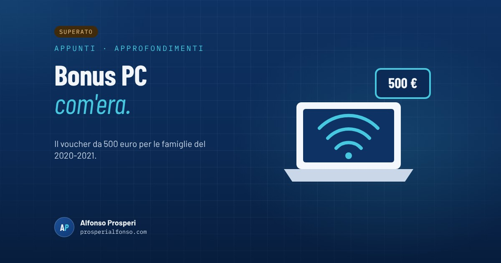

Il bonus PC, tablet e internet veloce era un voucher fino a 500 euro, previsto nella prima fase del piano per la banda ultralarga, per le famiglie con ISEE fino a 20.000 euro.
Come funzionava
- Il voucher si usava sottoscrivendo un'offerta di connessione veloce (almeno 30 Mbps in download) che comprendesse anche un pc o un tablet.
- Dei 500 euro, una parte copriva l'abbonamento (tra 200 e 400 euro) e una parte il dispositivo (tra 100 e 300 euro).
- La domanda si presentava direttamente all'operatore telefonico accreditato, autocertificando l'ISEE e dichiarando di non avere già una connessione di almeno 30 Mbps.
- Lo sconto veniva applicato dall'operatore sul canone o sull'attivazione; pc o tablet diventavano di proprietà della famiglia dopo un anno dall'attivazione.
- I fondi erano divisi per regione e il bonus valeva fino a esaurimento.
La misura gestita da Infratel Italia si è conclusa e non è più possibile richiederla. Per eventuali nuovi incentivi sulla connettività conviene controllare i siti istituzionali.